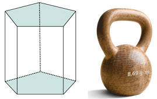

1.
Determina la generatriz de los conos truncados con los datos de cada imagen y encierra
la opción correcta.
2.
Observa los conos truncados con los datos de cada imagen y calcula la generatriz y el
área de la base superior e inferior.
3.
Calcula el área lateral de los conos truncados en base a los datos dados.
4.
Observa los datos del gráfico, calcula el área total y el volumen del cono truncado.
AT = cm2
V = cm3
5.
Relaciona los datos de las pirámides truncadas con su apotema lateral.
6.
Calcula el área lateral de las siguientes pirámides truncadas:
7.
Determina el área total y el volumen de la pirámide truncada con los datos que se muestra en
el gráfico.
AT =
V =
h =
cm3

10.
Un prisma pentagonal tiene una altura de 35 cm y cada lado mide 6 cm y apotema 3,01 cm. Si el cobre
pesa 8,69 g por cada centímetro cúbico, ¿cuánto pesa el prisma en kilogramos?

Peso = kg